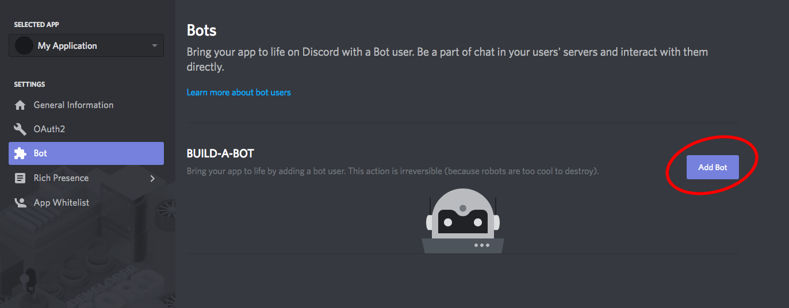
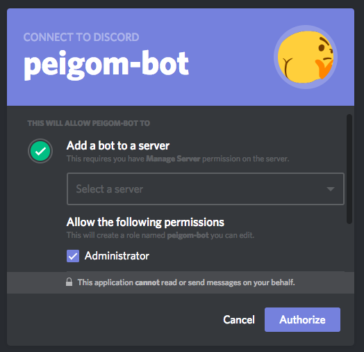
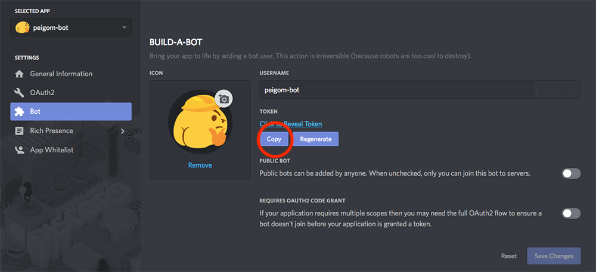
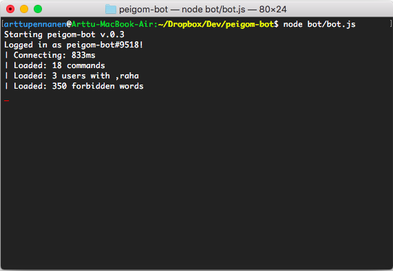
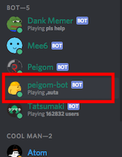
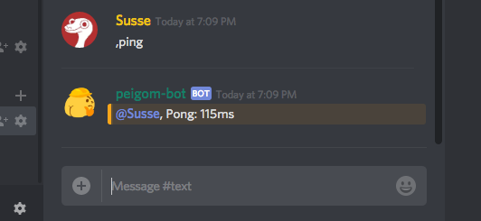

Asennus
peigom-bot on parasta asentaa Unix käyttöjärjestelmän päälle, mutta se toimii myös Windows järjestelmissä.
Node.js ja npm on ladattava ennen botin asennusta. Node.js ja npm asentuvat molemmat samassa paketissa.
Asentajan voi hakea täältä.
Voit tarkistaa ovatko node.js ja npm asennettu kirjoittamalla terminaaliin:
node -v
npm -v
Kun Node ja npm ovat asennettu, voit aloittaa botin asennuksen.
Hae peigom-botin tiedostot täältä. Pura botin tiedostot haluamaasi hakemistoon.
Huomaa, jos asennat botin Windows järjestelmään, valitse brancheista windows supported version ja lataa se.
Siirry terminaalissa asennushakemistoosi.
cd hakemistosi-polku
Asenna botin tarvitsemat node-moduulit.
npm install
Moduulien asennettua voi siirtyä botin configurointiin.
Configurointi
Discord botit tarvitsevat isännäkseen bottikäyttäjän. Tämän bottikäyttäjän kautta botti pääsee kirjautumaan Discordiin. Myö peigom-botille on luotava oma bottikäyttäjä.
Bottikäyttäjä luodaan Discordin kehittäjäpaneelissa, täällä.
Luo itsellesi uusi Discord applikaatio ja sille bottikäyttäjä.
Sinun tarvitsee valtuuttaa uusi discord applikaatiosi serverillesi.
Valtuuttamisen teet liittämällä alla olevan linkin selaimeesi.
https://discordapp.com/oauth2/authorize?&client_id={TÄHÄN-BOT-ID}&scope=bot&permissions=8
!HUOM vaihda '{TÄHÄN-BOT-ID}' applikaatiosi sivulta löytyvää Client-id:seen.

Botin applikaatiosivulta saat myös bottikäyttäjäsi tokenin, jota tarvitset botin configuraatio tiedoston configuroinnissa.
HUOMAA! Pidä bottikäyttäjän token turvassa, sen avulla kenen tahansa on mahdollista saada valta bottisi yli.
Bottikäyttäjän luomisen jälkeen muokataan peigom-botin configuraatio tiedostoja: bot/config/authorize_example.json ja bot/config/default_example.json. Mikä tahansa teksieditori käy tähän hyvin.
authorize_exapmple.json tiedostossa sinun täytyy vain asettaa hankkineesi token
default_example.json tiedoston alkupuolelta löytyy discord osio, jonka arvot ovat välttämätöntä päivittää peigom-botin toiminnan onnistumiseksi.
Muokkaa tiedostot vastaamaan arvojasi.
"discord": {
"prefix": ",", // Komentojen prefix
"authorized": [
"USERID" // Valtuutettujen käyttäjien discord ID/ID:T
],
"authorizedRoles": [
"ROLENAME" // Valtuutetun roolin nimi/nimet
],
"presence": {
"activities": [ // Jokaiselle riville voi laittaa aktiviteetin,
",auta", // aktiviteetti vaihtuu 15 min välein
"my name be jeff", // Voit jättää vain yhden rivin.
"yo big man bom",
"sugondese is a funny meme",
"pimpeli pom, nimi o peigom",
">:^V"
],
"type" : "LISTENING", //Aktiviteettien tyyppi (watching, playing, listening)
"refreshrate" : 15 // Kuinka monen minuutin välein aktiviteetti muuttuu
}
},
Tässä esimerkki miltä json tiedoston discord arvot voisivat näyttää:
"discord": {
"prefix": ",",
"authorized": [
"142097697528601857"
],
"authorizedRoles": [
"peigom-admin"
],
"presence": {
"activities": [
",auta",
"my name be jeff",
"yo big man bom",
"sugondese is a funny meme",
"pimpeli pom, nimi o peigom",
">:^V"
],
"type" : "PLAYING",
"refreshrate" : 20
}
},
},
TÄRKEÄÄ,
nimeä tiedostot vielä uudelleen poistamalla tiedostonimien lopuista _example.
Peigom-botin configuraatio tiedostoon tallennetaan discord tietojen lisäksi komentojen asetuksia, sekä sanastofiltterin sanat. Niitä voi tarvittaessa muokata, mutta väärin muokattuna muokatun osan toiminta voi lakata.
Käyttö
Asennettuasi ja configuroituasi peigom-botin on botti valmis käynnistämiseen.
Avaa terminaali ja vaihda sijainti asennushakemistoon. (cd hakemiston-polku)
Unix järjestelmässä peigom-botin voi käynnistää komennolla
./bot/runbot.shWindows järjestelmässä (toimii myös unixissa) voi myös käyttää
node bot/bot.jsOnnistunut botin suorittaminen näyttää tältä:
Jos peigom-bot on valtuutettu oikein, sen pitäisi näkyä hallinnoimallasi discord serverillä.
Komentojen käyttö discordissa
Botin toimivuutta voi kokeilla kirjoittamalla tekstichattiin ,ping
Tässä kaikki botin osaamat komennot:
- ,thonk
- ,dankmeme
- ,animation
- ,oof
- ,tomb
- ,pussukat
- ,hus
- ,ping
- ,auta
- ,help
- ,raha
Alla vielä komennot, joita voivat käyttää vain defaults.json tiedostossa spesifioidut käyttäjät:
- ,busy
- ,sudo
- ,sudopm
- ,restart
- ,sammuta
- ,puhista
- ,spam
Voit myös listata kaikki botin osaamat komennot kirjoittamalla:
,autaSaat lisätietoa haluamastasi komennosta kirjoittamalla
,auta <komennon nimi>
Toimintojen luonti ja botin rakenne
On hyvä tietää, että peigom-bottiin uusien toimintojen ja komentojen lisääminen edellyttää käyttäjältä Javascript osaamista. Bottiin ei tähän mennessä ole tehty mitään muuta tapaa luoda toimintoja, kuin raa'alla koodaamisella.
Peigom-bot on kumminkin hyvä alusta kirjoittaa uusia komentoja, jos osaamista löytyy.
Peigom-botin muokkaamiseen voi käyttää mitä tahansa teksti-editoria, mutta Visual Studio Code on suositeltu editori.
Botin rakenne
On hyvä sisäistää botin toiminta ennen sen muokkaamista.
Peigom botti koostuu niin sanotusti neljästä osasta.
bot.js on botin ydin. Se käsittelee
- Botin käynnistyksen
- Saapuvien viestien tulkitsemisen ja merkkaamisen
- Ja on välikätenä moduuleille
Bot.js sisältää todella vähän sellaista mitä käyttäjän tarvitsisi muokata.
Message-Parser.js on ensimmäinen botin moduuleista. Se käsittelee
- Saapuvien viestien sisällön
- Ja tulkitsee onko tuleva viesti mahdollisesti komento
MessageParser.js ei suositeltava muokattavaksi.
Command-Handler.js on toinen botin moduuleista. Se varmistaa, että
- Tuleva viesti on varmasti olemassa oleva komento
- Ja tarkastaa onko viestin lähettäjä valtuutettu käyttämään kyseistä komentoa.
CommandHandler.js ei suositeltava muokattavaksi.
Command-Executor.js on viimeinen botin moduuleista. Se
- Suorittaa komennot lopullisesti
Command-Executor.js ei suositeltava muokattavaksi.
Uusien komentojen luonti
Kopio botin juuresta löytyvä example-command.js kansioon ./bot/modules/commands
Nimeä tiedosto samalla termillä, kuin millä tahdot sitä Discordissa kutsua.
Esim: testi.js
Muokkaa tiedoston info muuttujaa vastaamaan komentoasi ja kirjoita exports.run() metodiin kaikki komennon logiikka.
Komento toimii samantien, jos siinä ei ole syntaksi virheitä ja se on varmasti oikeassa bot/modules/commands kansiossa.